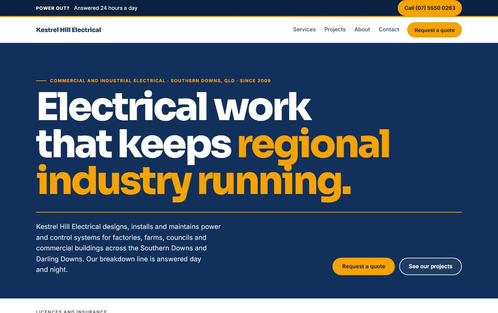
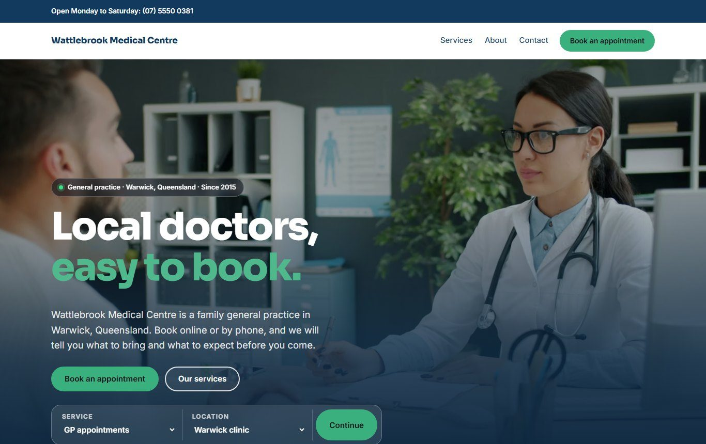

Websites & apps that win you work.
Built for trades, industry, farms, practices, firms and tourism. See three designs of your own site before you pay for the build.
- You own itYour site, words, photos and web address
- Three designs firstSee your own site three ways before you pay
- Fixed priceAgreed before work starts
- Checked on phonesEvery page, before every release
- Works with no signalOpened pages keep working offline
See the work.
Four demo sites, built the way yours would be. Open one and look around.
 Demo buildTallowood Ridge WinesWinery and cellar door · fictional business · Warm and friendly layoutSee the build →
Demo buildTallowood Ridge WinesWinery and cellar door · fictional business · Warm and friendly layoutSee the build →
Demo buildKestrel Hill ElectricalElectrical contractor · fictional business · Proof wall layoutSee the build →
Demo buildWattlebrook Medical CentreMedical centre · fictional business · Big photo, light layoutSee the build → Demo buildMallow Creek MotorsVehicle and machinery dealer · fictional business · Stock first layoutSee the build →
Demo buildMallow Creek MotorsVehicle and machinery dealer · fictional business · Stock first layoutSee the build →- 1Industry
- 2Business
- 3Your website
Who we serve.
Choose your industry, then your kind of business. You will see a real working website and every way it can be changed.


Everything from one team.


See what your next website can do.
Six things you can try, each with an honest note on where it works today.
From first call to live.
A free check, a short call, a ten-minute brief, then three designs of your own site. You pick one and we build it.
See how it worksBuilt for busy owners, not for tech people.
Each site is built from our own design system and tailored to your business. You get a proven layout with your name, words, colours and photos, and you own it.
- Three designs of your own site before you commit.
- Works on phones, and keeps working without a signal.
- You own your site, your words and your web address.
| Phone ready | Checked at phone and laptop width before every release. |
|---|---|
| Easy to read | Text contrast and button sizes checked against the accessibility standard. |
| Works offline | Pages your customers have opened keep working without a signal. |
| Found on Google | Search setup, a site map and local business details built in. |
| Quote form | Enquiries reach your inbox, with an email fallback. |
| Privacy page | Written for Australian privacy rules. You approve the wording. |
| Yours to keep | Hosting and web address sit in your own accounts. |
| Changeable | Colours, layout and sections can change without a rebuild. |
Answers, straight up.
What do I need to give you?
Your business name, what you do, your services, and your logo and photos. The Start a project form asks for each one.
Do I have to pick one of the three designs as it is?
No. You can ask for parts of each.
Will it work on phones?
Yes. Every page is checked at phone and laptop size.
Do I need an app store account?
Not to start. Android users install from one link on your site, and iPhone users add it to their home screen.
Will another company get the same website as me?
Not one that could be compared with yours. We keep a register of every design we deliver. Your design is never reused in your trade and region, and you can pay to make it exclusive.
Who owns the website?
You do. You own your site, your words, your photos and your web address. We keep our design system, which is the set of parts every site is built from.
No match. Ask us directly on the contact page.
Ready to see your three designs?
The brief takes about ten minutes.